利用GitHub创建个人博客
关键词： GitHub , 个人博客
这是binge在个人博客里的第一篇文章,不用再忍受某官方网站的各种约束,也不用忍受早已麻木的板式,在自己的地盘,写自己想写的东西,自己diy自己的blog,想想都有点小激动! Ok!激动之余！我将就这次创建个人博客的经历做简要介绍，详细叙述自己在其中所遇到的各种问题与一些处理细节，希望能给想建立自己个人博客的朋友一些帮助，少走一些弯路。由于本人能力有限,难免有言辞不准确,甚至错误的讲解,如有发现,请及时指正我,对于你我都是一种进步.
1. 前导篇
1.1 What is Git!
Git是一个分布式的版本控制系统.当我们编写某一款软件或web时一个功能或一个界面往往需要改多次，版本控制就是记录每一次的修改的内容变化，每一次修改即一个版本，这样有利于你花很小的代价，恢复到原先的某个状态。分布式版本控制系统的客户端不只提取最新版本的文件快照，而是把整个代码仓库完整的下载下来，也就是说当一个项目由多人完成时，每提交一次都是将包括自己修改的代码以及完整的项目提交给git,其他人只需要更新版本就可以的得到你所修改的部分代码,如果想恢复到其他版本,只需提取以前的版本即可.简单点说Git就是你的远程代码仓库,他将你的项目有顺序，有结构的组织起来。1.2 What is GitHub!
GitHub 是Git项目托管网站！可以这样理解，GitHub就是Git的门户，与我们直接联系的网站,我们可以通过github查看我们的项目，提交提取我们的项目.GitHub还是开源的，通过GitHub既可以让别人参与你的开源项目，也可以参与别人的开源项目.你可以将自己的优秀代码共享给他人，也可以将他人的优秀项目利用到自己的项目中.可以达到花费很小的时间达到很好的效果.2. 注册篇
看完前面的长篇大论估计现在的你已经昏昏欲睡了！现在让我开始真正的实战！ 如果已有账号请跳过此篇. 作为一名IT人才,怎么可能连注册都不知呢？传送门在此. 好吧还是简单说明一下吧！谁让我那么的善良呢！(闪.....) 第一步：将信息填写完后点击绿色按钮进行下一步 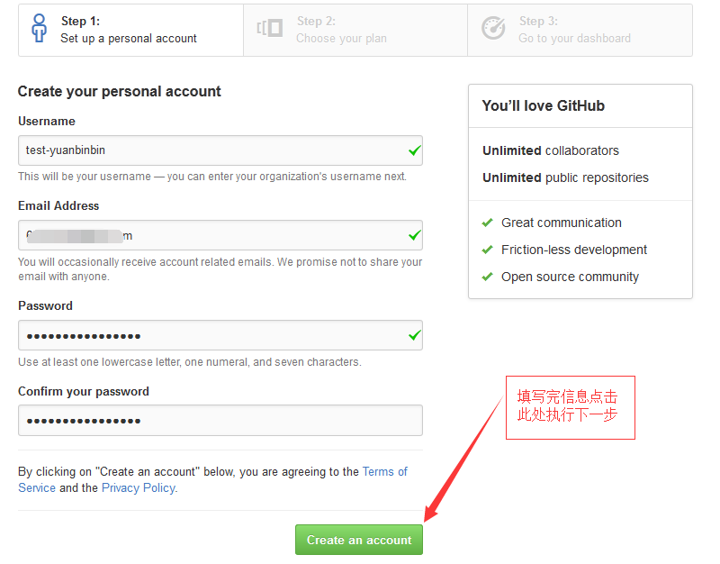 第二步：根据需求进行相应的选择，然后点击绿色按钮进行下一步 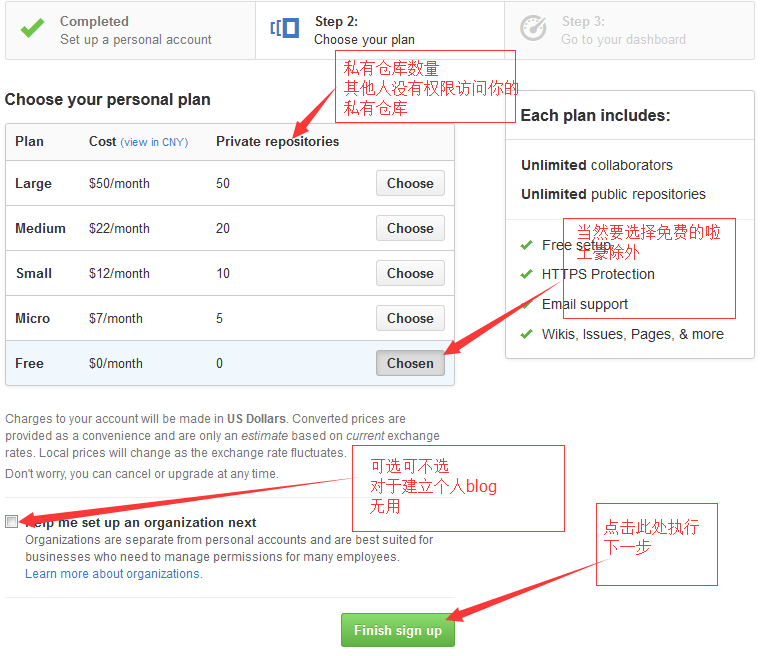 第三步：如果出现下面的页面，恭喜你，注册成功喽！！ 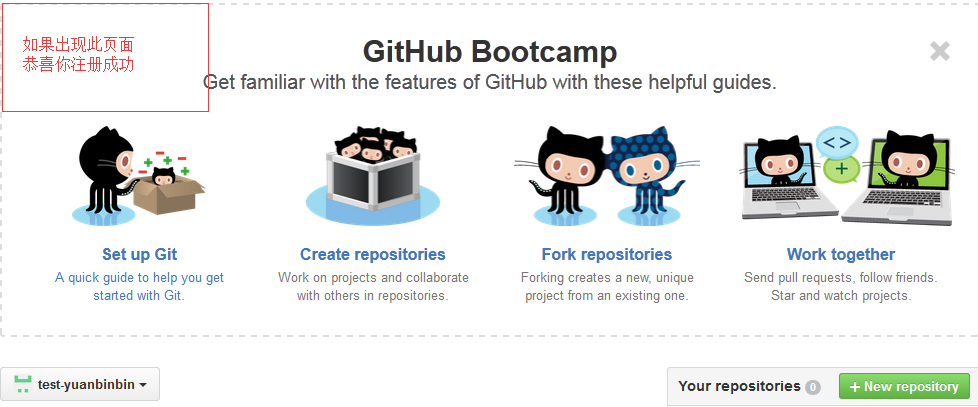3. 验证篇（很重要！！！）
请打开你的邮箱，查看发送给你的确认邮件，只有你验证邮箱后，后面生成的个人主页才会被接受和发布.（请一定要先验证否则后面的操作将会无效！！！！） 第一步：进入申请账户时所填写的邮箱，查找下图所指的Email，点击Email中的蓝色按钮 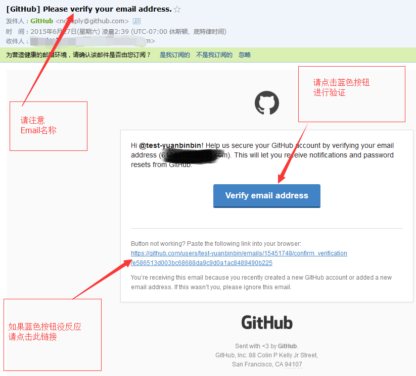 第二步：点击下图的Confirm按钮，进行验证。 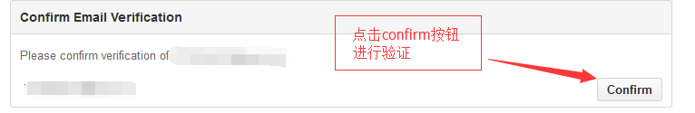4. 创建篇
现在该轮到本文章的重头戏了！你可要睁大眼睛仔细看哈！(⊙﹏⊙) 我是传送门！你点我啊！(⊙﹏⊙)！！！5. 注册篇
第一步：填写信息，请按下图规则来填写！！！ 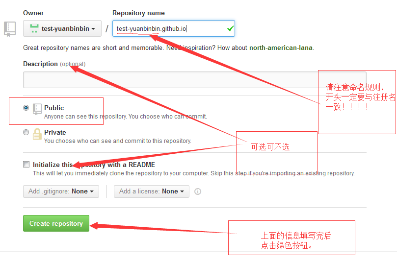 第二步：点击第一步绿色按钮后，会自动跳入下面的界面，点击Settings进行设置。 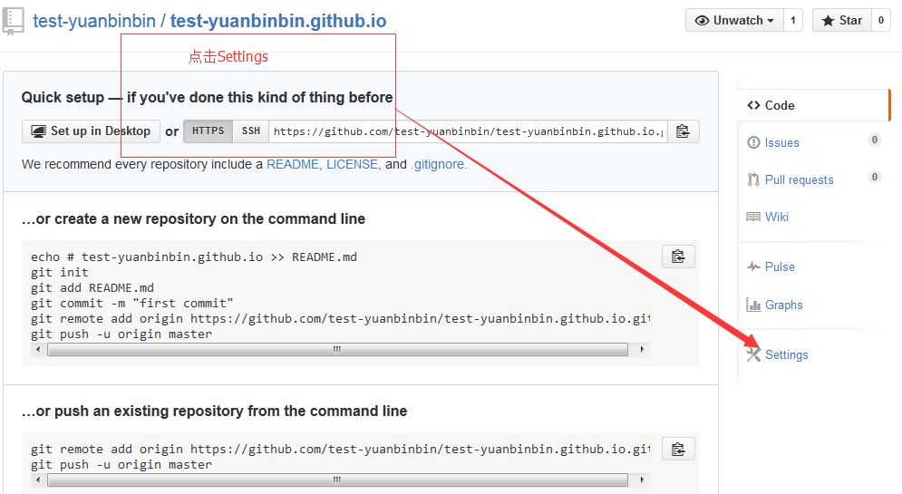 第三步：点击第二步settings按钮后，会自动跳入下面的界面，找到指定按钮并点击。 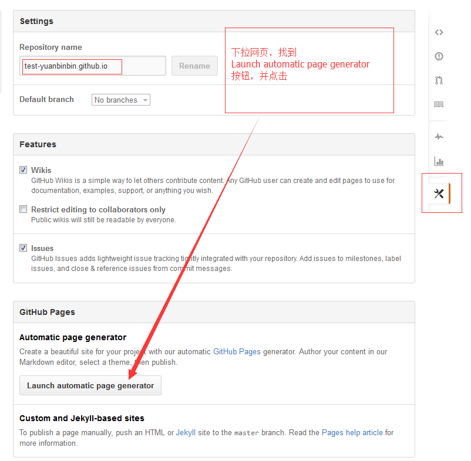 第四步：点击第三步按钮后，会自动跳入下面的界面，填写相关信息 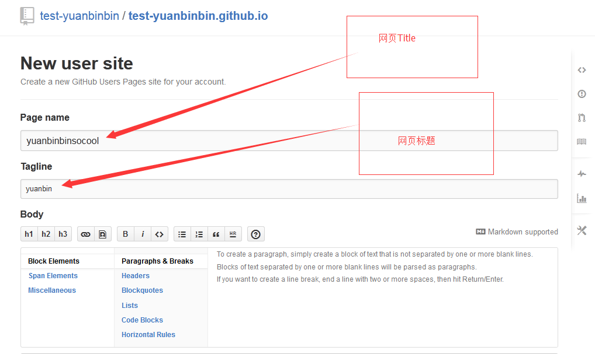 填写完相关信息，下滑网页找到下图绿色按钮并点击。 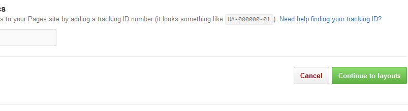 第五步：点击第四步绿色按钮后，会自动跳入下面的界面，选择一个自己喜欢的模板作为自己的网页，找到指定按钮并点击，即可发布成功。 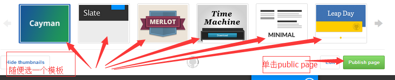6. 测试篇
完成注册步骤后，将返回成功页面，在首部见显示下图信息。 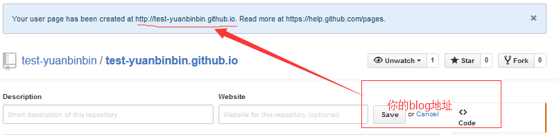 在浏览器地址栏输入该地址，将显示我们创建的blog！！！ 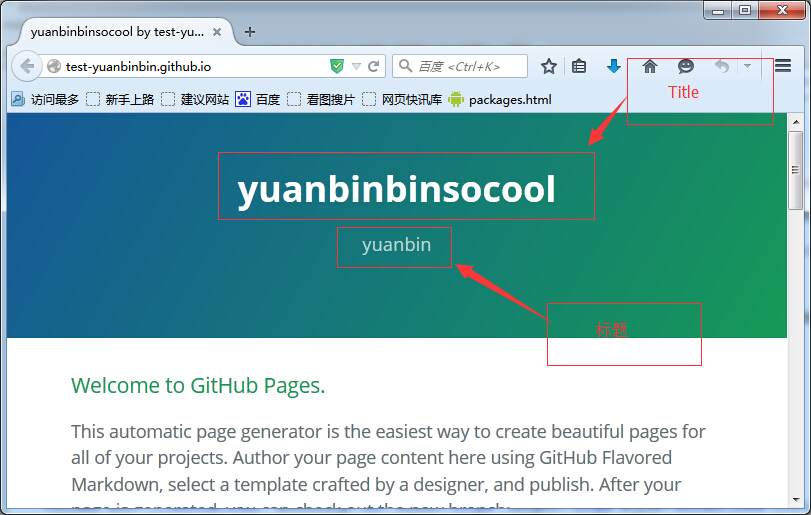 OK!!!经过上面的步骤，你的blog是不是已经成功了呢？下一篇博文我将介绍如何用我们自己已经 写好了的页面替换这个简陋的页面！！ 那我们下一篇文章再见哦！！让我伴随着你们的掌声，华丽丽的离开！！！！！